Depicted on Postage Stamps
|
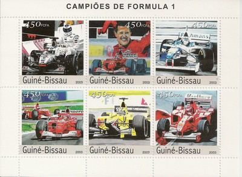 Issue date: 2003 A mini sheet of six values featuring F1 racing cars from the following teams: McLaren Ferrari Williams Jordan Issue date: 2014 A mini sheet issued to commemorate the 20th anniversary of the death of Ayrton Senna. Issue date: 2014 A mini sheet issued to commemorate the 20th anniversary of the death of Ayrton Senna. 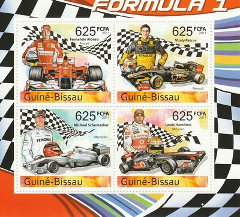 Issue date: 2011 A commemorative sheet featuring the 2011 F1 season and showing: - Fernando Alonso and the Ferrari F10 (note that this is the 2010 car, the 2011 had a higher nose) - Vitaly Petrov and the Renault R31 - Michael Schumacher and the Mercedes MGP W02 - Lewis Hamilton and the McLaren MP4/26 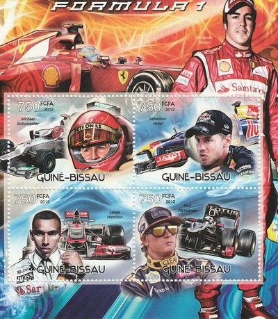 Issue date: 2012 A commemorative sheet featuring the 2012 F1 season and showing: - Michael Schumacher and the Mercedes F1 W03 - Sebastian Vettel and the Red Bull RB8 - Lewis Hamilton and the McLaren MP4/27 - Kimi Raikkonen and the Lotus E20 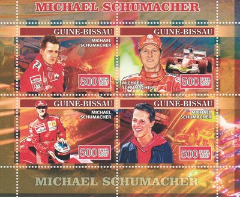 Issue date: 2007 A commemorative sheet featuring Michael Schumacher. 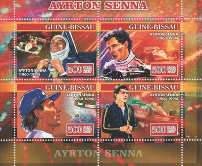 Issue date: 2007 A commemorative sheet featuring Ayrton Senna. 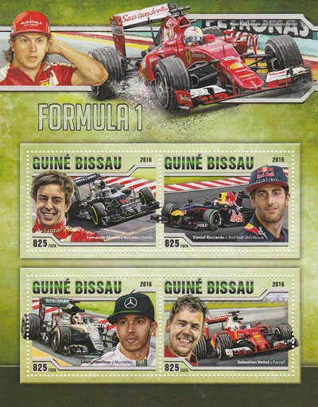 Issue date: 27th June 2016 A mini sheet of values featuring: - Fernando Alonso and the McLaren MP4/31 - Daniel Ricciardo and an unknown Red Bull (possibly RB7 or RB6) - Lewis Hamilton and the Mercedes F1 W07 Hybrid - Sebastian Vettel and the Ferrari SF16-H 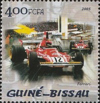 Issue date: 2005 A single stamp featuring Ferrari F1 cars. 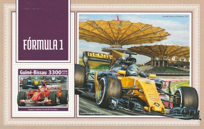 Issue date: 15th March 2018 A mini sheet featuring the 2010 Malaysion Grand Prix. The race was won by Sebastian Vettel (Red Bull) followed by Mark Weber in the other Red Bull, Nico Rosberg (Mercedes) was third. The race will be remembered for the storms during Qualifying which mixed up the grid, the result was some great charges from drivers who would normally be at the front on race day. Ross Brawn believed the mix up to be too much reliance on weather radars and not enough common sense being applied to the conditions - the main casualties of this were the Ferraris and the McLarens. 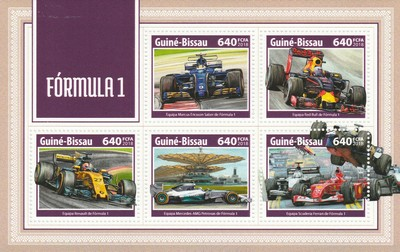 Issue date: 15th March 2018 A mini sheet of five values featuring various F1 cars and the Malaysian Grand Prix. 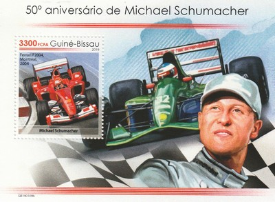 Issue date: 22nd January 2019 A mini sheet of one value featuring Michael Schumacher, in particular his 50th birthday (3rd January 2019). The single stamp shows the Ferrari F2004 - in 2004, the F2004 continued the run of success Ferrari had enjoyed since 1999, winning the team's 6th straight Constructors' Championship and 5th straight Drivers' Championship for Schumacher, his 7th, and final, world drivers' title. It is one of the most dominant cars in the history of F1. 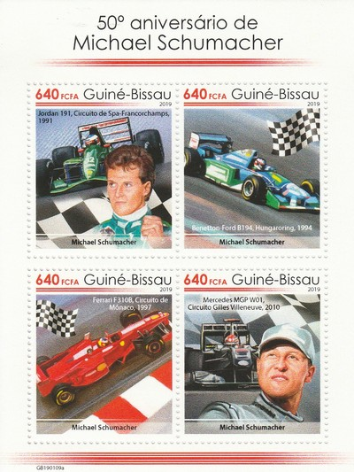 Issue date: 22nd January 2019 A mini sheet of four values featuring Michael Schumacher, in particular his 50th birthday (3rd January 2019). The following cars which Schumacher drove are featured: - Jordan 191 (1991 - Schumacher's debut at the Belgian Grand Prix) - Benetton B194 (1994 - Schumacher's first Drivers' Championship win) - Ferrari F 310 B (1997 - Schumacher was disqualified from the Drivers' Championship for unsportsmanlike conduct for a collision with Villeneuve) - Mercedes MGP W01 (2010 - Schumacher returned from retirement to join Mercedes from 2010 to 2012) 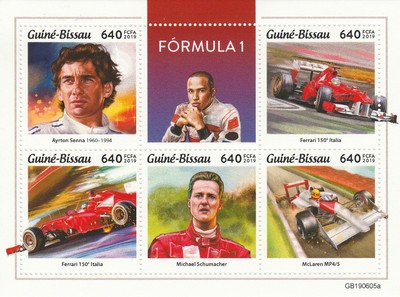 Issue date: 18th June 2019 A mini sheet of six values featuring the following drivers and cars: - Ayrton Senna - Lewis Hamilton - Michael Schumacher - Ferrari 150 Italia - McLaren MP4/5 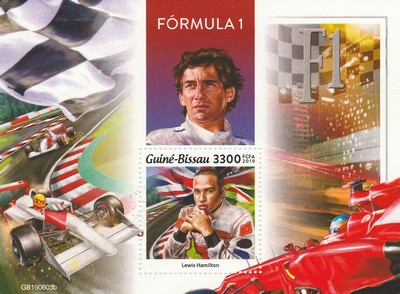 Issue date: 18th June 2019 A mini sheet of one value featuring Lewis Hamilton. 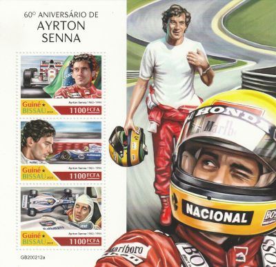 Issue date: 27th February 2020 TBD |